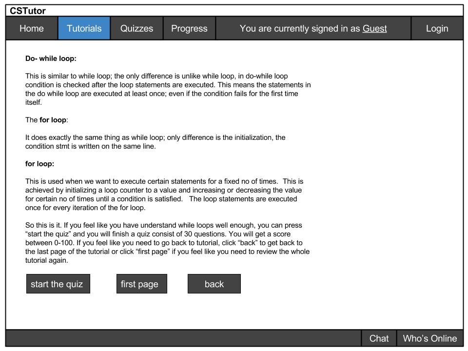
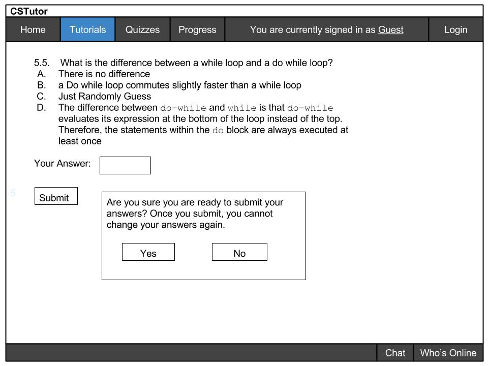
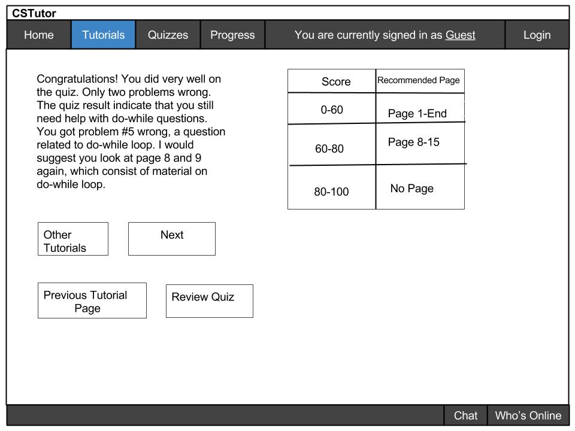

Before a student takes a quiz, the student usually finishes a small mini tutorial. The quiz can appear anywhere in the tutorial, and the instructor can put as many quizzes as he/she wishes. Once the student finished reading the mini-tutorial, the student can click "start the quiz" to start taking the quiz:

This is an example of the last page of the tutorial. Once the student finishing reading, the student can choose to take a quiz or go back to review the tutorial.
The button "start the quiz" will take the student to a quiz page similar to the image below, where the students will answer questions in the form of multiple choice, short answer, or fill in sample code.
The button "first page" will take the student back to the first page of the tutorial related to the quiz. This way the student can go over any material that they do not understand.
In case if the student only wants to review the previous page, the student can click the button "back" to go back to the previous page.
Once the student starts the quiz, an example of such quiz will look like this:
For this quiz, the student fills in the answer. The student can then click onto the next page and continue to finish the quiz.
Now, let's say if the student want to submit the quiz, it will look something like this:

Once the student click submit, the dialog will show up and prompt the user again for yes if he has completed the quiz. This is done so that students won't accidentally click submit and regret any question they have or have not answered.
After you hit the button "submit", the result is going to get computed:

Here, you can press button "other tutorials" to go to other tutorials, or "next" to move on to the next mini tutorial, "previous tutorial page" to the page of the last mini tutorial before the quiz, or "review quiz" to look at what problems were wrong. Again, the amount of these quizzes created are controlled by the instructor.
If the student did well, the quiz will simply tell the student to move on. Otherwise, as indicated in the picture, if the student got some score between 60-80, the student will go to "page 8"(in reality, the instructor can customize the quiz result to tell the student which page to go to) and review from there. If the student scored below a 60, the student would simply have to go back to the beginning of the mini tutorial and review it again.